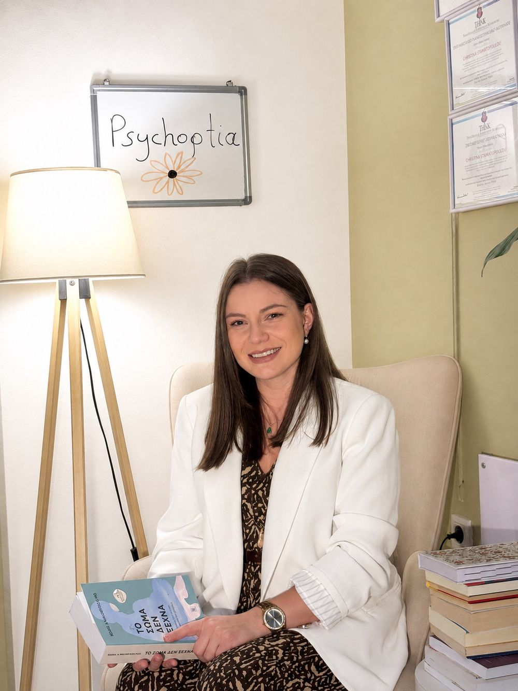
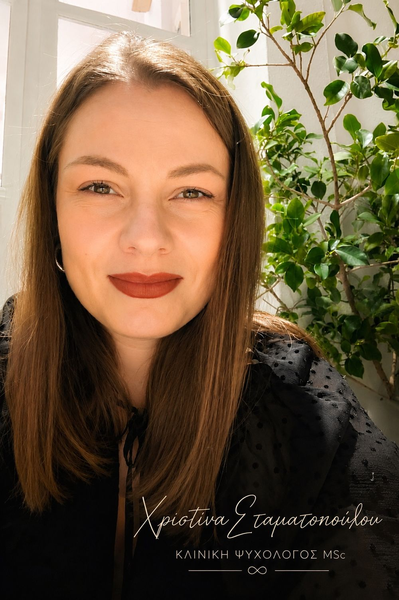

Ένας χώρος όπου
μπορείτε να ανοίξετε
Ψυχοθεραπεία για παιδιά, εφήβους και ενήλικες, συμβουλευτική γονέων και παιγνιοθεραπεία. Η θεραπευτική διαδικασία ξεκινά από κλινική αξιολόγηση και διαμορφώνεται γύρω από αυτό που φέρνετε εσείς — όχι γύρω από ένα έτοιμο πρωτόκολλο.

Το κατάλληλο εργαλείο για τον κάθε άνθρωπο
Δεν υπάρχει μία μέθοδος που ταιριάζει σε όλους. Γι' αυτό η δουλειά μου στηρίζεται σε τρεις διαφορετικές εκπαιδεύσεις που συνομιλούν μεταξύ τους: τη γνωσιακή–συμπεριφορική προσέγγιση, τη συστημική και οικογενειακή θεραπεία, και την παιγνιοθεραπεία με τις δημιουργικές τέχνες.
Ποια από αυτές θα χρησιμοποιηθεί — και σε ποια αναλογία — δεν αποφασίζεται εκ των προτέρων. Προκύπτει από την κλινική αξιολόγηση της πρώτης συνάντησης: από την ηλικία, το αίτημα, το πλαίσιο ζωής και τον τρόπο που ο καθένας εκφράζεται πιο εύκολα.
Ένα παιδί επτά ετών δεν θα μιλήσει για το άγχος του· θα το παίξει. Ένας ενήλικας με κρίσεις πανικού χρειάζεται και κατανόηση και συγκεκριμένα εργαλεία για το αύριο το πρωί. Ένας έφηβος χρειάζεται πρώτα να εμπιστευτεί ότι ο χώρος είναι δικός του.
Έξι πλαίσια συνεργασίας
Ψυχοθεραπεία παιδιών, εφήβων και ενηλίκων, συμβουλευτική γονέων, παιγνιοθεραπεία και δημιουργικές τέχνες — και, ξεχωριστά, ορισμένες συμπληρωματικές μέθοδοι χαλάρωσης. Σε κάθε περίπτωση, η δουλειά ξεκινά από αυτό που φέρνετε εσείς.
Χριστίνα Σταματοπούλου, MSc
Κλινική Ψυχολόγος με προπτυχιακές σπουδές στην Εφαρμοσμένη Ψυχολογία (University of Derby) και μεταπτυχιακό στην Κλινική και Κοινοτική Ψυχολογία (University of East London). Εκπαιδευμένη στη Συμβουλευτική, στην Παιγνιοθεραπεία και τις Δημιουργικές Τέχνες, και στη Συστημική και Οικογενειακή Θεραπεία.
Από το 2020 εργάζομαι ιδιωτικά. Έχω εργαστεί σε συμβουλευτικά κέντρα ψυχικής υγείας και έχω πραγματοποιήσει πρακτική άσκηση σε διεπιστημονικά πλαίσια, όπου παρακολούθησα πραγματικά περιστατικά δίπλα σε έμπειρους κλινικούς.

Πριν την πρώτη συνάντηση
Με ένα τηλεφώνημα στο 21 9219 6363 ή στο 697 248 7486. Δεν υπάρχει ηλεκτρονική ατζέντα και είναι σκόπιμο: μια σύντομη συνομιλία αρκεί για να δούμε τι σας απασχολεί, ποιο πλαίσιο ταιριάζει και πότε μπορούμε να ξεκινήσουμε. Αν προτιμάτε γραπτά, στείλτε email στο stam.christina2020@gmail.com και θα επικοινωνήσω μαζί σας.
Η συνεδρία διαρκεί 50 λεπτά. Η συχνότητα καθορίζεται από κοινού και συνήθως ξεκινά ως εβδομαδιαία, ώστε να χτιστεί η θεραπευτική σχέση· στη συνέχεια προσαρμόζεται στις ανάγκες και στους στόχους σας.
Η πρώτη συνάντηση είναι συνάντηση γνωριμίας και κλινικής αξιολόγησης: παίρνουμε το ιστορικό, χαρτογραφούμε τι σας φέρνει εδώ και συζητάμε τους θεραπευτικούς στόχους. Δεν χρειάζεται να έχετε «ταξινομήσει» το πρόβλημα πριν έρθετε — αυτό είναι μέρος της δουλειάς. Στο τέλος της συνάντησης θα ξέρετε πώς προτείνω να δουλέψουμε και μπορείτε να αποφασίσετε.
Ναι. Οι συνεδρίες πραγματοποιούνται είτε στο γραφείο στην Ηλιούπολη είτε διαδικτυακά, με τον ίδιο τρόπο εργασίας και την ίδια διάρκεια. Η διαδικτυακή επιλογή εξυπηρετεί όσους μένουν μακριά, ταξιδεύουν συχνά ή ζουν στο εξωτερικό. Χρειάζεστε μόνο έναν ήσυχο χώρο και σταθερή σύνδεση.
Ναι. Η εχεμύθεια είναι θεμελιώδης αρχή και δεσμεύει τον ψυχολόγο βάσει του κώδικα δεοντολογίας. Εξαιρέσεις προβλέπονται μόνο όταν υπάρχει σοβαρός κίνδυνος για τη ζωή του ίδιου του ατόμου ή τρίτων, ή όταν το επιβάλλει ρητά ο νόμος. Στη δουλειά με ανηλίκους, το πλαίσιο εμπιστευτικότητας συμφωνείται από την αρχή με το παιδί και τους γονείς.
Ας κάνουμε το πρώτο βήμα
Ένα τηλεφώνημα αρκεί. Θα μιλήσουμε σύντομα για το τι σας απασχολεί και θα κλείσουμε την πρώτη συνάντηση γνωριμίας — στο γραφείο στην Ηλιούπολη ή διαδικτυακά.
Οι συνεδρίες γίνονται αποκλειστικά κατόπιν ραντεβού. Το ωράριο διαμορφώνεται ανά ημέρα — καλέστε για να βρούμε μαζί την ώρα που σας εξυπηρετεί.
Το ραντεβού κλείνεται τηλεφωνικά
Δεν υπάρχει ηλεκτρονική ατζέντα — και είναι σκόπιμο. Μια σύντομη τηλεφωνική συνομιλία αρκεί για να δούμε τι σας απασχολεί, ποιο πλαίσιο ταιριάζει και πότε μπορούμε να ξεκινήσουμε.
Ή γράψτε μου και θα επικοινωνήσω μαζί σας:
Η συνεδρία διαρκεί 50 λεπτά. Αν βρίσκεστε σε κρίση ή σκέφτεστε να βλάψετε τον εαυτό σας, μην περιμένετε ραντεβού: καλέστε τη 1018 (Γραμμή Παρέμβασης για την Αυτοκτονία, 24/7) ή το 112.